Use Case
In the previous use case, we observed how ecommerce companies like amazon.com and Hotstar can automatically increase/decrease the number of EC2 instances automatically using AutoScalingGroups. This will save the billing around the EC2 instances and also makes sure the customer expectations are met as the web site responds within reasonable amount of time.
But, how do the EC2 instances get the web traffic? This is where the Load Balancers (ELB) come into the picture. AWS supports three types of ELBs (Classic, Network and Application). These ELBs take the request from the end user and forward the request to the EC2 instances in a round robin/weighted based routing fashion. The ELB is a managed service and AWS takes care of the high availability, scalability. All we need to create the ELB and register the EC2 instances with the same.
In this use case, we will create an Application ELB and register the EC2 instances with it and notice that the traffic is distributed across the EC2 instances.
The ecommerce company might be interested in client demographic details (OS, browser used etc), there usage pattern (time of usage), the response time for the website and a few other metrics. They would be using these metrics to fine tune their application and also to actively fix any slowness in the application.
This is where the ELB logs comes into the picture. ELB logs is disabled by default and needs to be enabled to write the request metrics to S3 bucket every five minutes. These metrics are fine grained and an analytics tool like Amazon EMR can be used to perform analytics on the metrics in a cost effective and scalable way.
To quickly summarize, in this use case we will creating a bunch of EC2’s and one ELB, register the EC2 instances with the ELB. Then we would be enabling the ELB logging to write request metrics to an S3 bucket. And finally, once we have enough data, we would be doing basic analytics using Apache Hive on Amazon EMR.
AWS Services: Application Load Balancer, S3, EC2, EMR
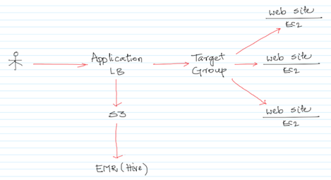
-- Create two EC2 instances with the below details and connect to the EC2 instances via Putty.
- t2.micro
- Ubuntu 18.04
- SG with inbound 22/SSH and 80/HTTP
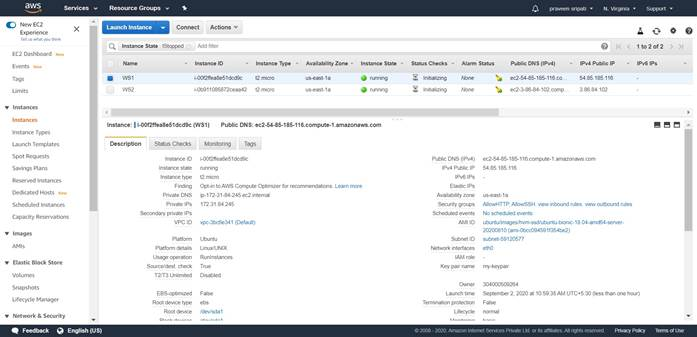
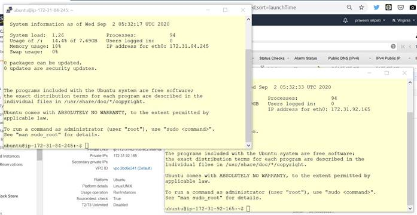
- Execute the below commands on both the EC2 instances, to install the apache2 webserver and create a simple webpage. Make sure to have different content in the index.html on both of them by modifying the last command.
#become a root
sudo su
#get the list of softwares
apt-get update
#install the apache2 webserver
apt-get install apache2
# start apache2
service apache2 start
#move to the default html folder
cd /var/www/html
#delete the existing index.html
rm index.html
#create a new index.html
echo "I am WS1" > index.html
-- In the EC2 Management Console, go to the “Targets Group” tab and click on “Create target group”.
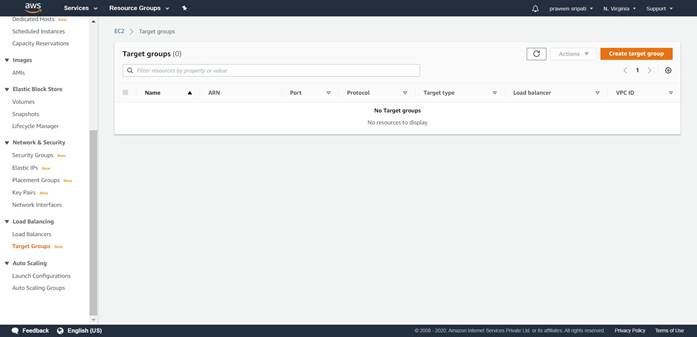
-- Specify the “Target group name” as TG.
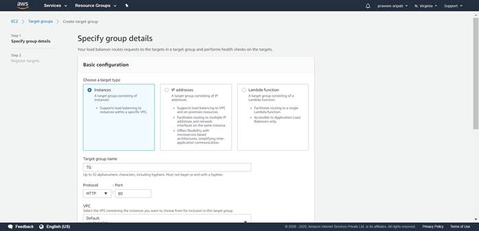
-- Go with all the default options and click on Next.
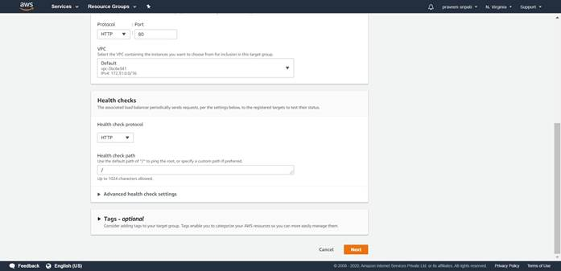
-- Select the EC2 instances and click on “Include as pending below” to register the EC2 instances with the Target Group.
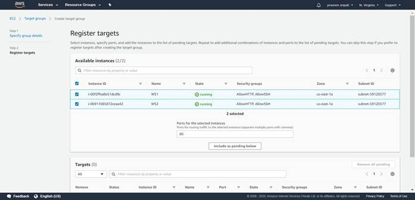
-- Click on “Create target group”.
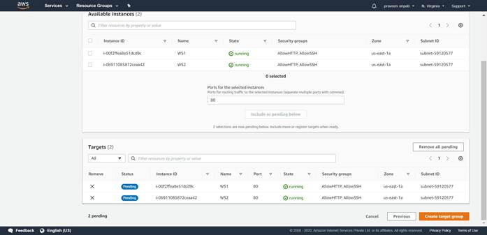
-- Click on the “Load Balancers” tab and click on “Create Load Balancers”.
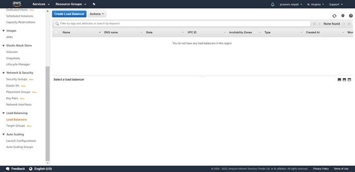
-- Click on create for the “Application Load Balancer”.
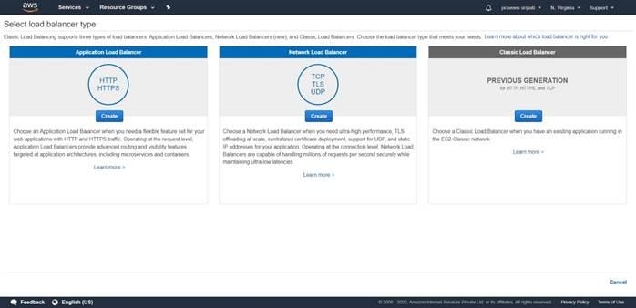
-- Specify the name as MyALB.
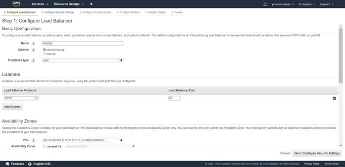
-- Make sure to select all the Availability Zones and click on Next twice.
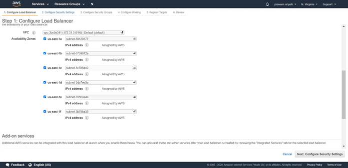
-- Select the Security Group which allows the HTTP traffic through the Load Balancer. If there is no such Security Group then create one. Click on Next.
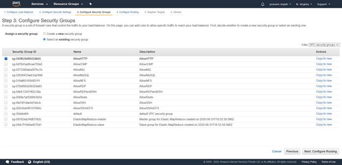
-- For the Target group, select “Existing target group” and select TG for the name. Click on Next twice.
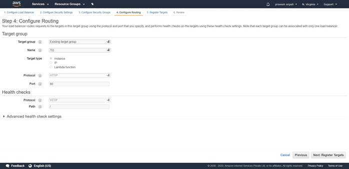
-- Review the Load Balancer details and click on Create.
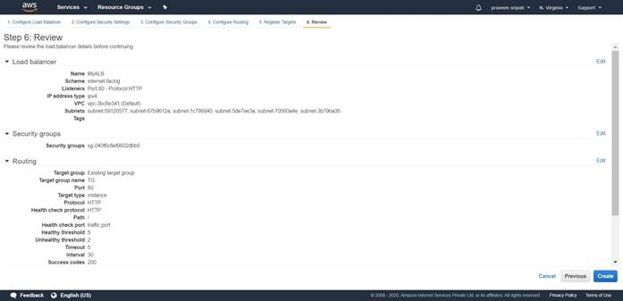
-- Wait for the Load Balancer status to become active. It means that the Load Balancer has initialized and is ready to accept request. Note down the Load Balancer DNS name, the same is used to access the Load Balancer via the browser.
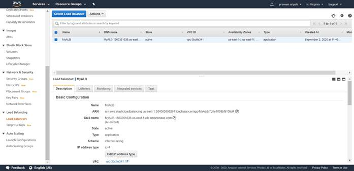
-- Make sure the Load Balancer is selected and click on “Edit attributes” at the bottom of the screen.
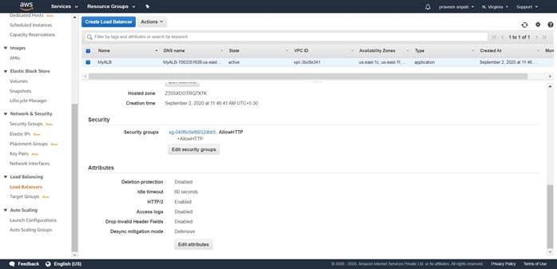
-- Enable the “Access logs” and enter a unique bucket name, make sure to select “Create the location for me” and click on Save. A bucket will be created in S3 and the Load Balancer requests will be logged into the same.
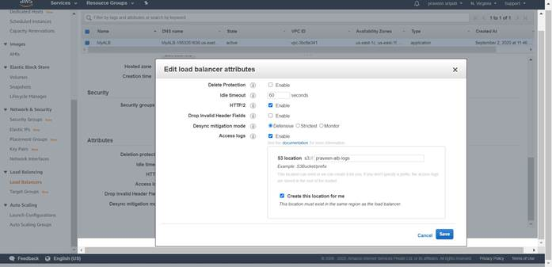
-- Access the Load Balancer via the DNS name from different machines (laptops, desktops and mobiles), different browsers, different OS and from different networks (LAN, different 3G operators etc). Try as many combinations as possible to get some variance in the data for about 10 minutes and then delete the Load Balancer, Target Group and the EC2 instances as we have enough data to work with.
The access details of the Load Balancer will be logged into the S3 folder as shown below. Note that there might be some files with size as 0B. Hive has problem with 0B files, so delete them.
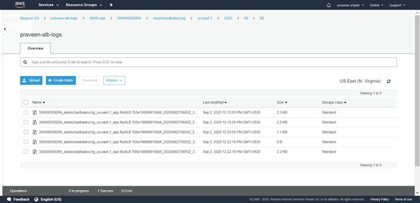
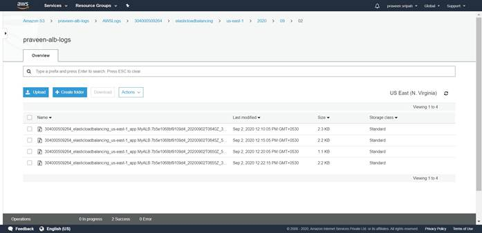
-- Create a S3 bucket to store the analytics results from Hive.
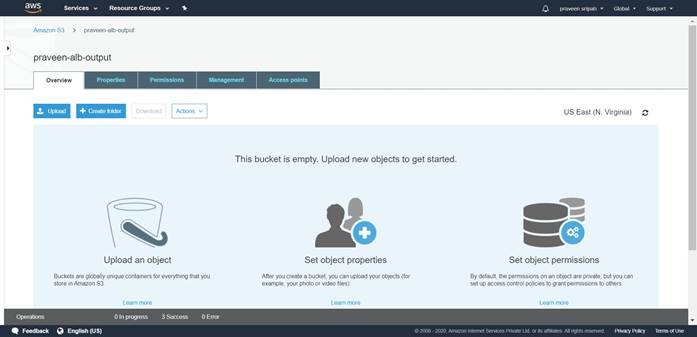
-- Create a bucket called “praveen-alb-queries” in S3 for the SQL queries to be
run and upload the files to it. Before uploading the files make sure to change
the “s3://praveen-alb-logs/AWSLogs/304000509264/elasticloadbalancing/us-east-1/”
and “s3://praveen-alb-output” paths based on the buckets created earlier. The first
represents the input path and the second represents the output path for the
Hive scripts when executed.
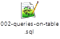
The first SQL file has the definition for the
creation of the table and second file has four SQL statements with the details
on what those SQL statements do.
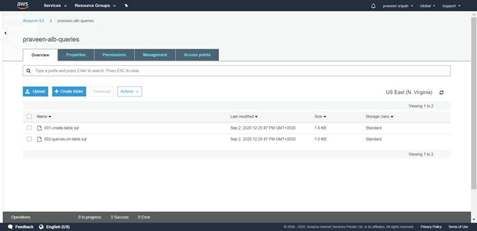
-- Go to the EMR Management Console and click on “Create cluster”.
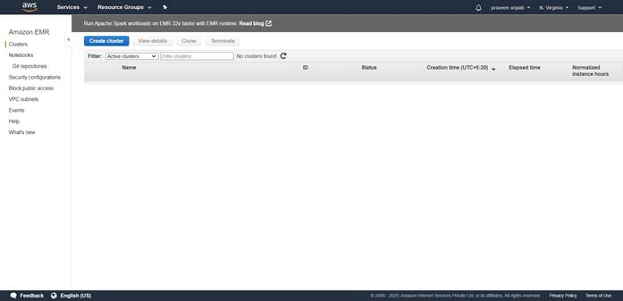
-- Click on “Go to advanced options”.
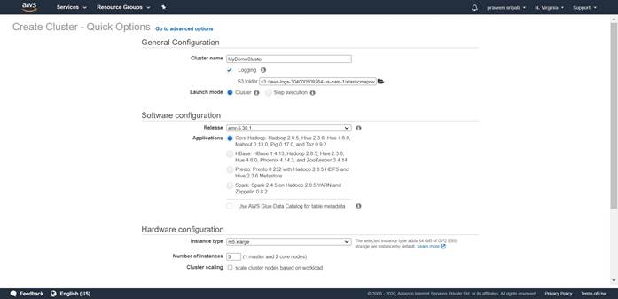
-- Go with the default release. Make sure only Hadoop and Hive is selected. Select concurrent execution of the steps as 10 and click on Next.
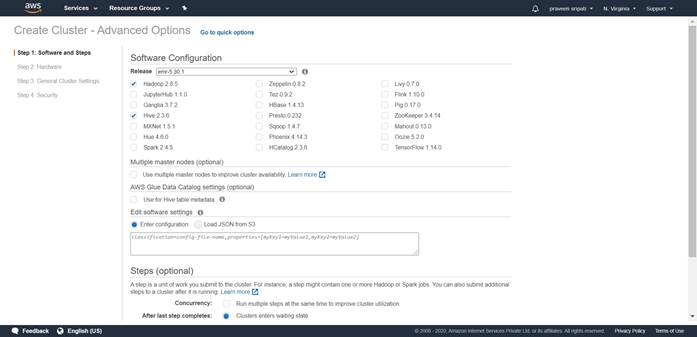
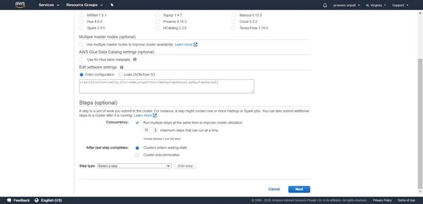
-- In the Hardware Configuration, make sure to
- delete the task
instance
- select spot instances
- number of instances for the Master and Core as 1
And click on Next.
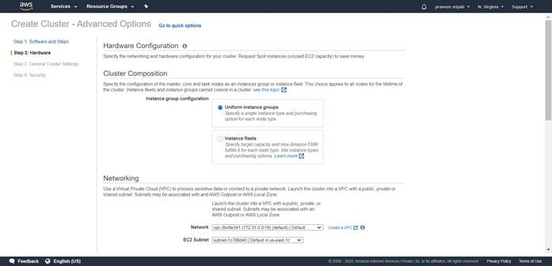

-- Enter the Cluster name as “MyDemoCluster”, uncheck the “Termination protection” option and click on Next.
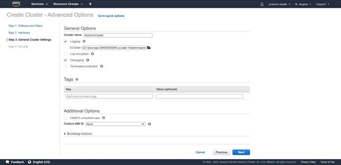
-- Select the EC2 key pair, this would allow to login to the EC2 instance later if required for the sake of debugging. Click on “Create cluster”.
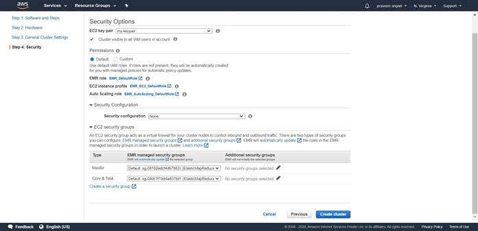
-- Initially the cluster would be in a “Starting” status.
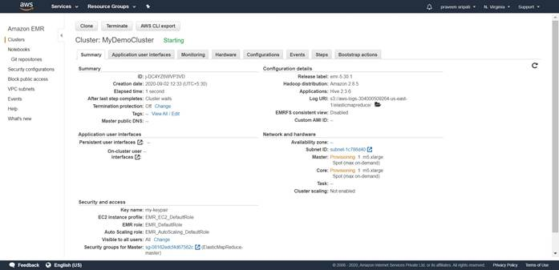
-- Also, there would be two EC2 instances one for master and one for the core automatically created. On these the Big Data software would be automatically installed and configured by EMR.
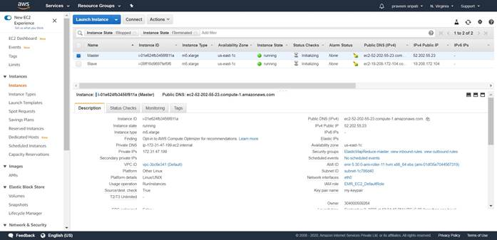
-- After around 10 minutes, the status of the cluster would change to “Waiting”. Click on the Steps tab and notice that the “Setup Hadoop debugging” step would be in a completed status.
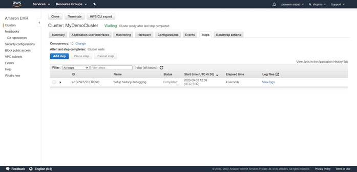
-- Click on “Add step” and select the Step type as Hive. For the “Script S3 location” point to the 001-create-table.sql file in S3 and click on Add. This step for creates a table in S3 called alb_logs with the appropriate columns and points the table to the S3 location of the ELB generated logs.
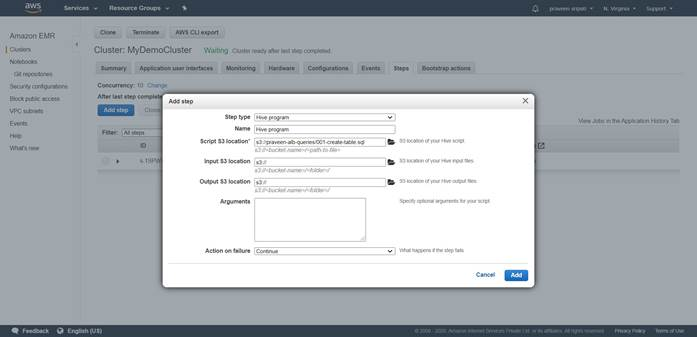
-- Initially the Step would be in a pending Status and in a few minutes would change to Completed status for the table to be created in Hive.
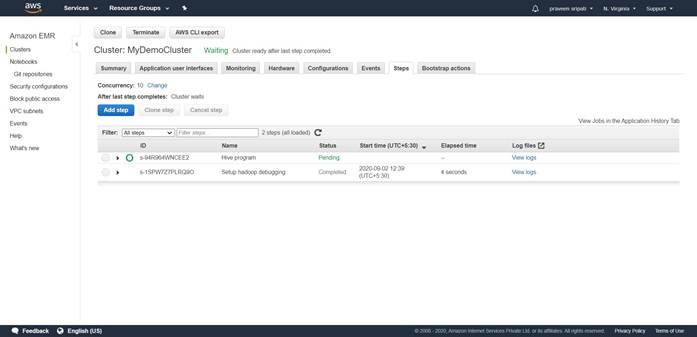
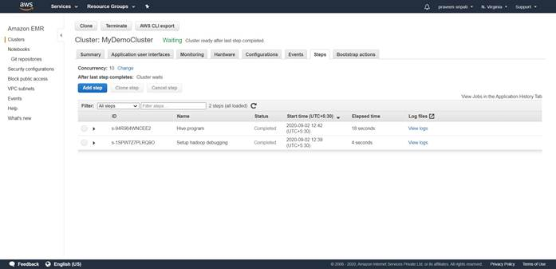
-- This time click on “Add step” again, select the Step type as Hive and point to the 002-queries-on-table.sql file in S3. Click on Add. This step would be executing four SQL queries on the alb_logs table which in turn would be processing the date in S3. The output of the queries would be written to S3.
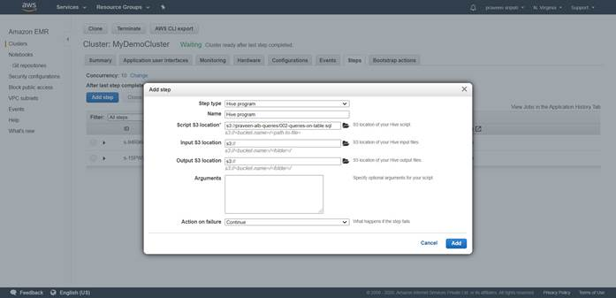
-- Initially the status of the Step would be in a Pending state, in a few minutes it would change to Completed status as with the case of the previous step.
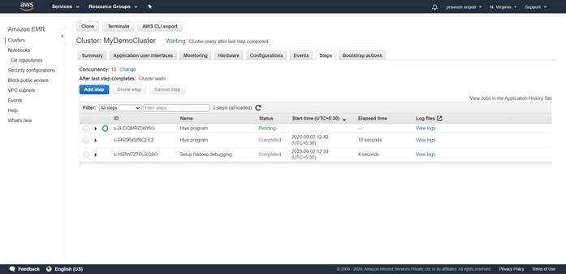
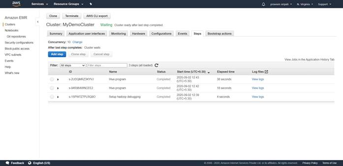
-- In the output S3 bucket specified in the 002-queries-on-table.sql file there would be folders (output*) for the corresponding queries. Go into each of the output* folder and download the files to see the output of the queries.
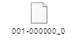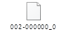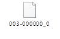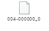
The output of 4 queries has been attached for reference. Note that the content of the files might change from user to user.
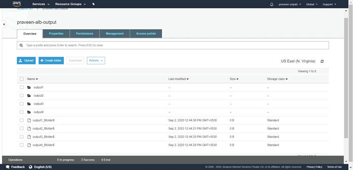
-- Feel free to try out any new SQL statements on the alb_logs table by creating an SQL file, uploading the same to S3 and executing a Step using the same SQL file. Once done, click on Terminate twice.
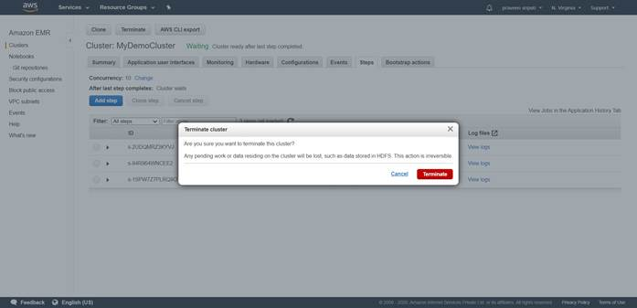
-- The EMR cluster would be in a Terminating status and the EC2 instances in a shutting down status.
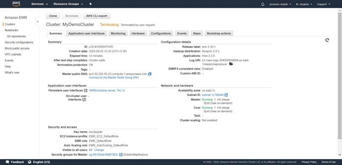
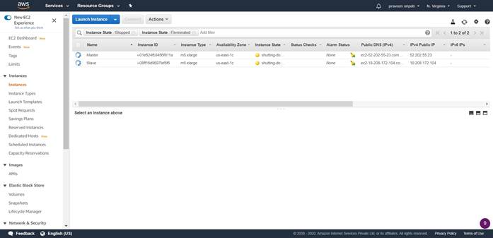
-- In a few minutes the EMR Cluster would be in a terminated status and the EC2 instances also in a terminated status.
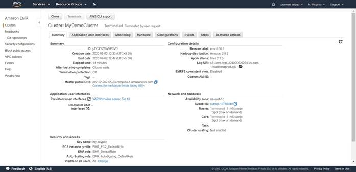
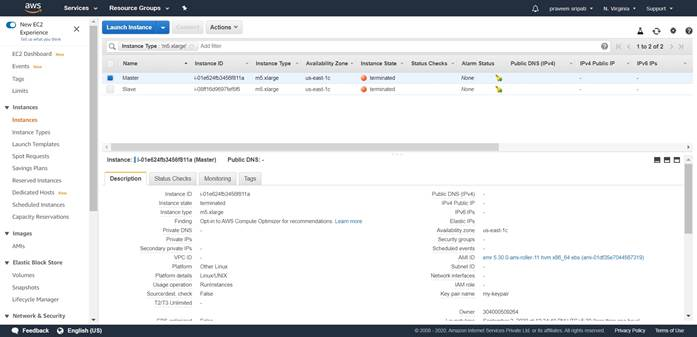
To conclude, we have seen how to process ELB logs to get some useful insights out of it using Hive. AWS EMR also allows to use Spark, Impala and other softwares to be installed on the EC2 instances. Very interesting insights can be extracted from the data using the Big Data tools.